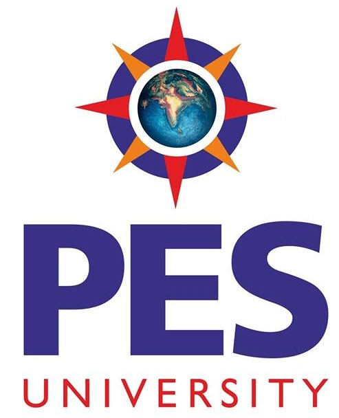

01About
I'm part of the Responsible AI Evaluation team at Apple and an Affiliate at Princeton's Center for Information Technology Policy. I recently completed my Ph.D. in Computer Science at Princeton University.
At Princeton I was advised by Andrés Monroy-Hernández. My dissertation, Toward Human-Centered, Evidence-Based Policy on AI's Labor Impacts, combined system building and empirical studies to understand and improve AI's impact on society. My Ph.D. centered on two projects: the Workers' Algorithm Observatory, where I built tools like FairFare and FareShare that help gig workers and labor organizers measure and contest algorithmic harms, and OpenCourier, a decentralized protocol for delivery work.
This research helped shape Colorado's SB 24-75, the first U.S. state AI transparency law for algorithmically mediated work, and laid the foundation for the WAO's partnership with the NYC Department of Consumer and Worker Protection.
Along the way I interned at Microsoft Research (FATE), AWS and Apple, was a Google Policy Fellow at the Center for Democracy & Technology, and worked as an Applied Scientist at Amazon. I care deeply about CS education and mentoring undergraduate researchers.
Research interests
-
Responsible AI & EvaluationMeasuring how deployed AI systems behave, and for whom.
-
AI & the Future of WorkAuditing algorithmic management and building tools for workers.
-
Tech PolicyTurning empirical evidence into legislation and regulation.
-
Human-AI InteractionDesigning and evaluating LLM-powered tools for people.
-
Platform TransparencyAccountability for opaque platforms, from rideshare to ads.
-
CS EducationConcept inventories, curricula, and mentoring.
02News
-
Sep 2026
Research from the WAO laid the groundwork for a partnership with the NYC Department of Consumer and Worker Protection, part of the city's record $131.5M DoorDash settlement, covered by the New York Times.
-
Jul 2026
Joined the Responsible AI Evaluation team at Apple in Cambridge, MA.
-
Jun 2026
Continuing at Princeton as an Affiliate of the Center for Information Technology Policy (CITP).
-
May 2026
I completed my Ph.D.! Dissertation: Toward Human-Centered, Evidence-Based Policy on AI's Labor Impacts. Committee: Andrés Monroy-Hernández (advisor), Solon Barocas, Peter Henderson, Manoel Horta Ribeiro, Arvind Narayanan.
-
Apr 2026
At CHI 2026 in Barcelona: FairFare (TOCHI), our framework for reporting on generative AI use, and Envisioning Alternative Futures for Delivery Work on the OpenCourier protocol.
- 2026
-
Dec 2025
Princeton Engineering featured our work: New tool drives gig workers toward wage transparency.
-
Nov 2025
New report from the Center for Democracy & Technology on deterrence messaging to prevent searches for non-consensual intimate images, the outcome of my Google Policy Fellowship with Dhanaraj Thakur.
-
Oct 2025
- FairFare accepted to ACM TOCHI! Through FairFare we've collected over 4 million rideshare trips, and the data supported organizers' advocacy around Colorado SB 24-75.
- Co-organized CSCW Northeast at Stevens Institute of Technology.
- Head TA for COS 324: Introduction to Machine Learning and the Junior Research Workshop.
-
Jun 2025
- Began my internship at Microsoft Research NYC (FATE), mentored by Solon Barocas, Su Lin Blodgett, Aylin Caliskan and Agathe Balayn.
- CDT published a blog post about my rideshare transparency research.
-
May 2025
- New preprint: FareShare: A Tool for Labor Organizers to Estimate Lost Wages and Contest Arbitrary AI and Algorithmic Deactivations.
- Submitted comments to the 2025 National AI R&D Strategic Plan.
- Invited talk at the TUM School of Social Sciences and Technology.
-
Apr 2025
CITP published a Meet the Researcher profile about me.
-
Mar 2025
CITP blog post on FairFare and our rideshare research.
-
Feb 2025
- New preprint: FairFare, a collaboration across Princeton, Penn State, CU Boulder and UC Berkeley.
- 4 system papers (CrowdLLM, GPTFootprint, PolicyPulse, ConversAR) accepted to CHI Late Breaking Work; all began as COS 436 course projects I helped define and mentor.
- Presented our Dynamic Programming Concept Inventory at SIGCSE 2025 (slides).
- Designed an Agile Ethics Rideshare Roleplay with Prof. Steven Kelts for EGR 371.
-
Jan 2025
- QuaLLM accepted to Findings of NAACL 2025.
- Our CITP/WAO work was cited in the Paris AI Action Summit Consultation Report on the Future of Work (p. 99).
-
Dec 2024
- Won a Google Policy Fellowship with the Center for Democracy & Technology.
- Invited talk at ARTIC, Princeton (slides).
- Named Registration Co-Chair for FAccT 2025.
-
Oct 2024
- Lightning talk at the CITP Conference: Tech Policy, The Next Ten Years.
- Invited talk at the Data Driven Social Science Interdisciplinary Exchange on algorithmic wage discrimination in rideshare.
- Dynamic Programming Concept Inventory paper accepted to SIGCSE 2025.
-
Sep 2024
- Rideshare Transparency accepted to CSCW 2025.
- Invited talk at the National Employment Law Project: "Making Rideshare Governable".
- Named a Graduate Fellow of Social Data Science at Princeton.
-
Jun 2024
Released a policy memo and blog post calling for rideshare transparency, after helping influence the bill language of Colorado SB 24-75.
-
May 2024
- Passed my Princeton CS Ph.D. General Exam on Societal Impacts of AI on Labor (slides, reading list, notes).
- New preprint, QuaLLM, presented at the CHI 2024 LLMs as Research Tools workshop.
Scroll for older news
03Publications
Societal Impacts of AI, HCI & Tech Policy
-
Under review
Toward a Science of Collective Dynamics in the Age of Artificial Intelligence
-
Under review
"We do not like to legislate and regulate based on hypotheticals": How Policy Stakeholders Evaluate Evidence about General-Purpose AI
-
Under review
How Can LLMs Support Policy Researchers? An Evaluation of an LLM-Assisted Workflow for Analysis of Large-Scale Unstructured Data
-
2026
What Drivers Want vs. What Drivers Take: A Worker-Centered View of Fairness in Ridehail Platforms
-
2026
FareShare: A Tool for Labor Organizers to Estimate Lost Wages and Contest Arbitrary AI and Algorithmic Deactivations
-
2026
Envisioning Alternative Futures for Delivery Work: Toward a Decentralized Network Built on the OpenCourier Protocol
-
2026
A Framework to Characterize Reporting on Generative AI Use
-
2025
FairFare: A Tool for Crowdsourcing Rideshare Worker Data to Empower Labor Organizers and Influence Policy
-
2025
Rideshare Transparency: Translating Gig Worker Insights on AI Platform Design to Policy
-
2025
Think Twice Before You Search: Deterrence Messaging Designs to Prevent Searches for Non-Consensual Intimate Images
-
2025
PolicyPulse: LLM-Synthesis Tool for Policy Researchers
-
2025
Redefining Research Crowdsourcing: Incorporating Human Feedback with LLM-Powered Digital Twins
-
2025
GPTFootprint: Increasing Consumer Awareness of the Environmental Impacts of LLMs
-
2025
ConversAR: Exploring Embodied LLM-Powered Group Conversations in Augmented Reality for Second Language Learners
-
2024
Worker Data Collectives as a Means to Improve Accountability, Combat Surveillance and Reduce Inequalities
-
2023
Discrimination through Image Selection by Job Advertisers on Facebook
-
2021
"I would have to evaluate their objections": Privacy Tensions between Smart Home Device Owners and Incidental Users
Explainable AI & Multimodal Machine Learning
-
2025
QuaLLM: An LLM-based Framework to Extract Quantitative Insights from Online Forums
-
2024
RAVEN: Multitask Retrieval Augmented Vision-Language Learning
-
2021
A First Look: Towards Explainable TextVQA Models via Visual and Textual Explanations
-
2020
Misspelling Detection from Noisy Product Images
-
2018
Gamification of a Visual Question Answer System
-
2018
Extracting and Visualizing Character Associations in Literary Fiction using Association Rule Learning
Computer Science Education
-
2025
Construction and Preliminary Validation of a Dynamic Programming Concept Inventory
-
2023
What is an Algorithms Course? Survey Results of Introductory Undergraduate Algorithms Courses in the U.S.
High Performance Computing
-
2017
First Look: Linear Algebra-Based Triangle Counting without Matrix Multiplication
* Equal contribution. Also on Google Scholar.
04Experience
Industry & policy
-
Responsible AI Evaluation
Jul 2026 – PresentApple · Cambridge, MALeading (directly responsible individual) internal policy development, product, and research efforts on AI safety evaluations of controversial topics (e.g., political neutrality and bias) across Siri AI and Apple Intelligence.
-
Research Intern, FATE Group
Jun – Aug 2025Microsoft Research NYC · Mentors: Solon Barocas, Su Lin Blodgett, Aylin Caliskan, Agathe BalaynDesigned a conceptual framework for AI use transparency artifacts and led qualitative research with AI policy stakeholders (government, industry, civil society) on how uncertainty about general-purpose AI use shapes regulation.
-
Google Policy Fellow, Content Moderation
Jan – May 2025Center for Democracy & Technology · Washington, DCLed the design and evaluation of three deterrence messaging mechanisms (informative, reductive, friction-based) to reduce NCII exposure, with feedback from a working group of 10+ major online platforms, academics, and survivor advocates.
-
Applied Scientist II Intern, AWS Bedrock
May – Aug 2023Amazon Web Services · San Francisco, CADeveloped a unified retrieval-augmented encoder-decoder vision-language architecture with no pretraining or additional trainable parameters; gains on captioning (+1 CIDEr MSCOCO, +4 CIDEr NoCaps) and VQA (+3% on VQA v2).
-
Applied Scientist II, Multimodal AI
Feb 2020 – Jul 2021Amazon · Product Assurance, Risk and Security · Seattle, WAExplainable multimodal text-in-image and classification models to protect customers and build seller trust. Invited talk at AMLC 2020; COLING 2020 Outstanding Paper Award.
-
Computer Vision Intern, Core Recognition
May – Aug 2019Apple · Cupertino, CAImproved OCR accuracy by up to 28% and expanded support for handwritten text.
Academic research
-
Affiliate, Center for Information Technology Policy (CITP)
Jun 2026 – PresentPrinceton University · Princeton, NJ -
Research Assistant, Center for Information Technology Policy (CITP)
Aug 2022 – May 2026Princeton University · Advisor: Prof. Andrés Monroy-HernándezBuilding tools (e.g., FairFare, FareShare) to understand gig worker concerns, measure and mitigate AI and algorithmic system harms, and generate evidence for AI policy, as part of the Workers' Algorithm Observatory (WAO).
- Influenced the first state-level AI transparency legislation in the U.S. for algorithmically mediated work (CO SB 24-75); a co-author served as expert witness using our paper as evidence.
- Foundational research enabling the WAO's partnership with the NYC Dept. of Consumer and Worker Protection, covered by the NYC government and the New York Times.
- Designed and evaluated human-AI interaction tools (e.g., QuaLLM, Digital Twins, GPTFootprint) with productivity impacts.
- Partnered with platforms in the Global South to operationalize transparency interventions and evaluate their effect on worker well-being through RCTs (Co-PI on a Gates Foundation–funded grant, $100K).
- Defined and measured a new form of discrimination through image selection by job advertisers on Facebook.
-

Research Assistant, CyLab Security & Privacy Institute
Aug – Dec 2019Carnegie Mellon University · Advisors: Prof. Camille Cobb, Prof. Lujo BauerUnderstanding the privacy needs and attitudes of incidental home IoT users through in-person focus groups.
-
Research Assistant, Robotics Institute
Sep 2018 – May 2019Carnegie Mellon University · Advisors: Dr. Donghyun Yoo, Prof. Kris KitaniDeep-learning-based 6DoF camera pose estimation from monocular RGB and depth images, state of the art on the 7-Scenes dataset.
-
Undergraduate Research Intern, Electrical & Computer Engineering
Jun – Jul 2017Carnegie Mellon University · Advisor: Dr. Tze Meng LowImplemented an exact triangle counting algorithm with a speedup of up to 2000× over the miniTri baseline.
05Education
-
Ph.D., Computer Science
2022 – 2026Princeton UniversityDissertation: Toward Human-Centered, Evidence-Based Policy on AI's Labor Impacts
Committee: Andrés Monroy-Hernández (advisor), Solon Barocas, Peter Henderson, Manoel Horta Ribeiro, Arvind Narayanan -
M.S., Electrical and Computer Engineering
2019Carnegie Mellon University · GPA 3.96/4.0 -

B.E., Computer Science and Engineering
2018PES Institute of Technology, Bangalore · GPA 9.97/10, Rank 1/132 (Gold Medalist)
06Teaching
-
324
COS 324: Intro to Machine Learning & Junior Research Workshop
Fall 2025Head TA · Profs. Victoria Dean, Ruth Fong, Adji Bousso Dieng · 139 + 45 studentsCourse creation, lecturing, and incorporating AI ethics into lectures, precepts, and assignments. Course site
-
371
EGR 371: Designing the Future of Work
Spring 2025Course Affiliate · Prof. Andrés Monroy-HernándezIdentified guest speakers, designed an AI ethics role play from my Ph.D. research, and mentored a capstone with an external organization.
-
436
COS 436: Human-Computer Interaction
Fall 2024TA · Prof. Andrés Monroy-Hernández · Rating 4.26/5Defined and mentored research projects, 4 of which were accepted to CHI Late Breaking Work 2025 (32.8% acceptance). Course site
-
598
COS 598I: Responsible AI in Societal Deployment
Spring 2024TA · Prof. Lydia Liu · Rating 4.67/5 -
350
COS 350: Ethics of Computing
Fall 2023TA · Prof. Arvind Narayanan · 101 students, first iteration of a new course · Course site
Mentorship
I've been fortunate to work closely with many excellent Princeton undergraduates:
- Cathy Di
- Abani Ahmed
- Angela Li
- Kyler Zhou
- Eesha Agarwal
- Kristoffer Selberg
- Jessica Ereyi
- Kok-Wei Pua
07Tech Policy
-
Colorado SB 24-75: the first U.S. rideshare transparency law2024
-
Comments on the 2025 National AI R&D Strategic Plan2025
-
Paris AI Action Summit expert consultation2025
-
EU consultation: "Future-Proof AI Act: Trustworthy General-Purpose AI"2024
-
Report to Colorado Independent Drivers United2024
-
Supreme Court amicus brief, Gonzalez v. Google2022
08Invited Talks
-
The Need for Transparency in AI and Algorithmic Rideshare Platform Decisions2025
-
The Role of Policy in Enhancing Transparency in Rideshare Platforms2024
-
Empirical Validation of Algorithmic Wage Discrimination in Rideshare2024
-
Making Rideshare Governable2024
-
Societal Impact of AI on Labor: Studies of Rideshare and Social Media Ad Platforms2024
-
Societal Concerns in Targeted Ad Delivery Algorithms2024
-
On Ad Delivery Algorithms2023
-
Explainable Multimodal TextVQA Models2020
09Awards & Honors
- Best Paper Honorable Mention, CSCW2026
- Google Policy Fellowship2025
- Graduate Fellow of Social Data Science2024
- FAccT Doctoral Consortium2023
- Outstanding Paper Award, COLING2020
- Gold Medal & Hamsa Kartik Alumni Award2018
- Prof. MRD and Prof. CNR Rao Scholarship2014–18
- MIT/IEEE/DARPA Graph Challenge Honorable Mention2017
- Summer Research Fellowship, Indian Academy of Sciences2017
- INSPIRE Scholarship for Higher Education, Govt. of India2014
- CBSE Certificate of Merit in Computer Science2014
10Service
- Organizing
-
- Registration Co-Chair, ACM FAccT2025–27
- Organizer, CSCW Northeast, Stevens Institute of Technology2025
- Organizer, Workshop on Worker Data Collectives, CSCW, Costa Rica2024
- Editorial
-
- ACM TOCHI Distinguished Reviewer Board · selected among 180 applicants2026
- Reviewing
-
- CHI'25 '27
- CSCW'26 '27
- FAccT'24 '25
- NeurIPS Ethics'23 '24
- ACL'22–24
- EMNLP'22–24
- NAACL'22 '23
- SIGCSE'23
- WebConf'23
- ACM C&C'24
- Community
-
- Social Chair, Princeton HCI Group
- COS Graduate Student Council; led orientation for new MSE and Ph.D. students
- Office of Campus Engagement Summer Fellow, Princeton2024
- Schools & workshops attended
-
- Who Counts? Sex and Gender Bias in Data · UCLA2022
- Graduate Summer School on Algorithmic Fairness · UCLA2022
- Boston Differential Privacy Summer School · Boston University2022
- Data Mining and Machine Learning Summer School · IIT Gandhinagar2016